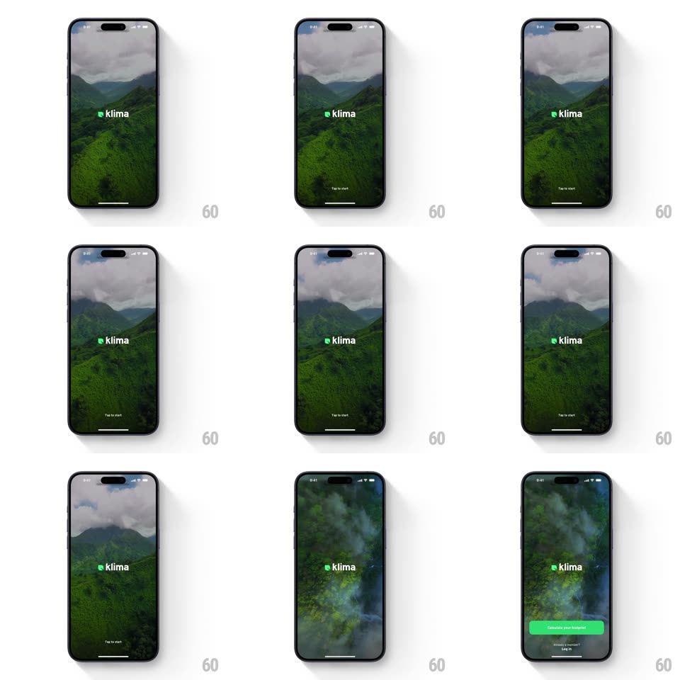

Media
Frame-by-frame

Rebuild this interaction 1:1: Klima's splash - a green logo screen crossfades into a looping aerial rainforest video with the klima wordmark and "Tap to start"; tapping shuffles the background video and slides up the onboarding controls.

Rebuild this interaction 1:1: Klima's splash - a green logo screen crossfades into a looping aerial rainforest video with the klima wordmark and "Tap to start"; tapping shuffles the background video and slides up the onboarding controls. ## Integration Integration: stack-agnostic spec - springs given as stiffness/damping, timed motions as duration + curve; map every value to your framework and animation library of choice. ## Scene Solid green splash with the white klima leaf-mark; then full-screen aerial jungle video under drifting clouds, white "klima" wordmark centered, "Tap to start" at the bottom; after the tap, a green "Calculate your footprint" button and "Already a member? Log in" link rise at the bottom. ## Motion spec Pattern: splash-to-video crossfade with background shuffle. - Launch: the green splash holds ~600ms, then crossfades into the video (500ms) as the wordmark fades in (300ms, slight rise). - The background video loops with a slow lateral drift; every few seconds it shuffles - crossfading to a different aerial cut (600ms) while the wordmark stays rock still. - Tap anywhere: "Tap to start" fades out, the background dims ~15%, and the green CTA button slides up from the bottom edge (spring ~320/24) with the login link fading in beneath it. - The wordmark gently breathes (scale 1 <-> 1.02, 3s) while idle. ## Calibration - All motion is in the background layer and the bottom controls - the wordmark never moves. - The green of the splash, the button, and the leaf in the wordmark are one brand green. ## Reduced motion Static background frame; controls fade in without slide. ## Don't miss - The video keeps playing behind the raised controls - the CTA overlays, never replaces. - "Tap to start" is tiny and centered-low; it whispers, the video shouts.